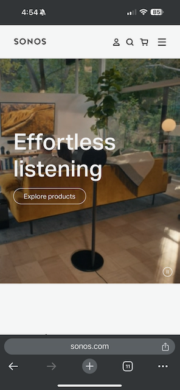
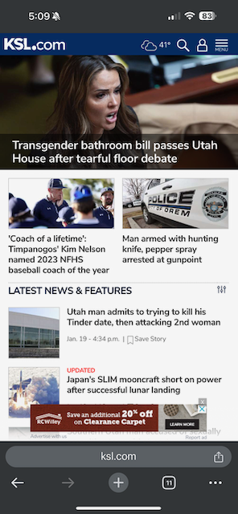
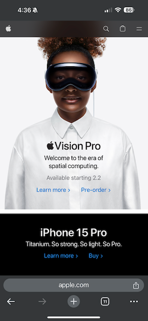

White Space and Clean Design
Sonos
The Sonos website utilizes white space and a clean design to draw attention to the what the company offers, and how to find it. There no unnecessary verbaige. There is no need to explain further. The moving image behind the text helps explain what the meaning, but blends into the background.
PARC: Alignment
KSL
KSL provides news articles. Their homepage is a good example of the alignment principle. The elements on the page are consistent and align with similar/related elements. The top of the page has a hero with the main story. Under that are two stories that align as symetrical boxes of the same size next to each other. That is followed by a list of articles, each with a picture on the left and text on the right.
PARC: Contrast
Apple
The design of the Apple homepage uses black text on a white background, alternating with white text on a black background. This maximizes the contrast of the text on the page, while also using contrast to distinguish sections of common content within that page. The high contrast improves the page readability while providing a bold and elegant experience.